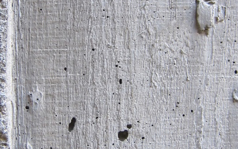
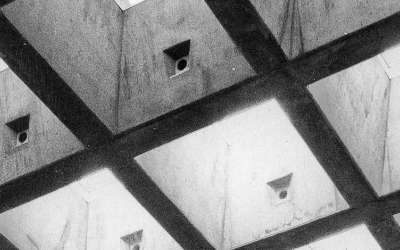

IN-
TRO
origin
Brutalist architecture flourished from the 1950s to the mid-1970s, descending from the modernist architectural movement of the early 20th century.
The term originates from the French word for "raw", as Le Corbusier described his choice of material béton brut meaning raw concrete in French. Architects Alison and Peter Smithson are believed to have coined the term "Brutalism" in the 1950s.
today
Although the Brutalist movement was largely dead by the mid-1980s, having largely given way to Structural Expressionism and Deconstructivism, it has experienced a resurgence of interest since 2015 with the publication of a variety of guides and books.
CHAR-
ACTER-
ISTICS
repeat
REPEATED MODULAR ELEMENTS
concrete
CONCRETE IS USED FOR ITS RAW AND UNPRETENTIOUS HONESTY
texture

REVEALING THE TEXTURE OF THE WOODEN PLANKS USED FOR CASTING FORMS
materials

MATERIALS ALSO INCLUDE BRICK, GLASS, STEEL AND GABIONS
exposure
THE EXPOSURE OF THE BUILDING'S FUNCTIONS